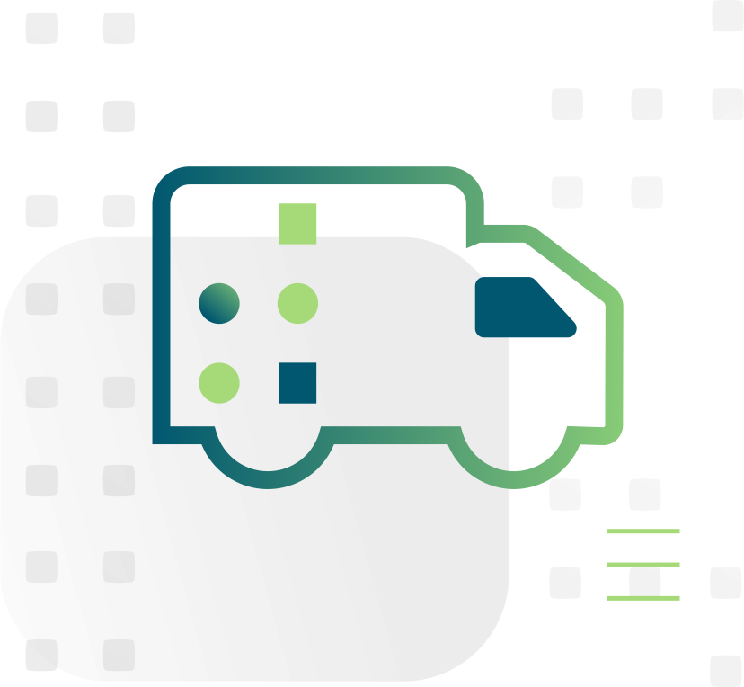

Designing and delivering perfect racks has always been a collaborative effort, but with many datacenters still running on limited staffing—and travel still an unappetizing possibility for many businesses—ensuring racks are organized, functional, and arrive ready for deployment has taken on a greater importance.
With each new customer, collaboratively building a First Article ensures that the initial datacenter rack and every rack after meets expectations. At Redapt, our First Article process incorporates customer feedback to ensure every detail is covered before we switch to production mode.
That way, the enterprises we work with are able to focus on their core business rather than their datacenter infrastructure. The First Article is the foundation of this process, since it details and ensures every component of a rack has been thoroughly tested and approved before it reaches a datacenter.
A streamlined process
At a high level, deploying new infrastructure follows five basic steps: design, procurement, build, shipping, and deployment.
Within each of these steps are potential pain points for organizations, such as disruptions to supply chains, faulty hardware, and shipping complications.
Since each of these potential hiccups comes with a price tag, it’s not uncommon for companies taking the DIY approach when deploying new infrastructure to experience sticker shock once their new hardware is up and running.
Our solution to this problem is to control all aspects of rack integration for our customers. This not only saves them valuable time and resources, it makes the entire process much more efficient by ensuring new infrastructure is ready to deploy as soon as it hits the datacenter.
For the steps listed above, here’s how it breaks down:
Step 1: Design
Together, our teams do a deep dive into the company’s unique hardware and software needs in order to identify the right equipment and components. We then construct a detailed engineering document of what their new infrastructure will look like.
Step 2: Procurement
Working with our supply chain teams, we locate and purchase every piece of equipment in the design. All hardware is shipped to our secure facilities where it is unboxed and thoroughly tested for defects.
Step 3: Build
As we assemble the equipment, we focus on every detail based on the customer’s preferences. This includes bend radiuses of cables, choice of cable coloring and label fonts, and more. Then, before repackaging for shipping, we integrate software, and perform a comprehensive quality control process that includes automated validation of port mappings, server configurations, component tests, and more.
Step 4: Shipping
Our team coordinates all logistics and can meet the delivery of the hardware at the customer’s datacenter. Once there, we unpack the racks and remove all packaging and recyclable materials.
Step 5: Deployment
Since the new racks have arrived at the datacenter already assembled, cabled, and optimized, the timeline for installation and integration is greatly reduced.
Throughout this entire process, we regularly provide updates on schedules, supply chain management, and overall progress so that there are no surprises along the way.
And since our First Article process with new customers ensures every aspect of the first datacenter rack meets their expectations, they can depend upon every future rack delivery being turnkey and of the highest quality.
To learn more about our Rack Integration services, or to schedule a consultation with one of our experts